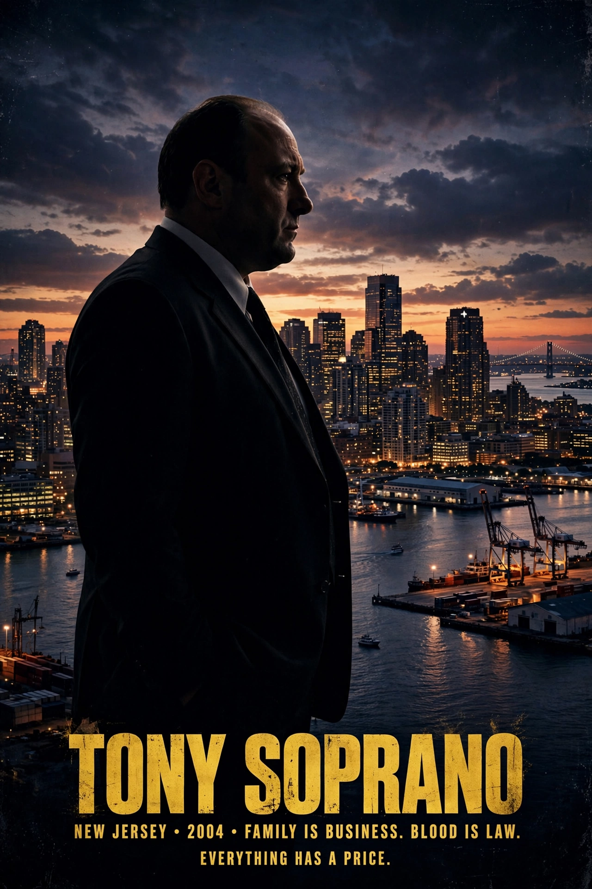

| Genre | Crime drama |
|---|---|
| Created by | David Chase |
| Starring | James Gandolfini, Lorraine Bracco, Edie Falco, Michael Imperioli, Dominic Chianese, Steven Van Zandt, Tony Sirico, Robert Iler, Jamie-Lynn Sigler |
| Country of origin | United States |
| Original language | English |
| No. of seasons | 6 |
| No. of episodes | 86 |
| Original network | HBO |
| Original release | January 10, 1999 – June 10, 2007 |
The Sopranos is an American crime drama television series created by David Chase for the cable network HBO. The series revolves around Tony Soprano (James Gandolfini), a New Jersey-based Italian-American mobster, who struggles to balance his family life with his role as the leader of a criminal organization. His difficulties are explored during therapy sessions with psychiatrist Jennifer Melfi (Lorraine Bracco). The series features Tony's family members, Mafia colleagues, and rivals in prominent roles, most notably his wife Carmela (Edie Falco) and his protégé and nephew-by-marriage Christopher Moltisanti (Michael Imperioli).
Widely regarded as one of the greatest and most influential television series of all time, The Sopranos is credited with launching the Second Golden Age of Television. The series won a multitude of awards, including Peabody Awards for its first two seasons, 21 Primetime Emmy Awards, and five Golden Globe Awards. It is widely cited as one of the most influential artistic works of the 2000s.
Tony Soprano is a capo in the DiMeo crime family who, after suffering a panic attack, begins attending therapy sessions with Dr. Jennifer Melfi. Over the course of the series, Tony rises to boss of the family while contending with his domineering mother Livia, his ambitious uncle Junior, rival New York families including the Lupertazzi family, and the constant threat of FBI investigation and informants within his own ranks.
David Chase had worked as a television writer and producer for decades before pitching The Sopranos, originally conceived partly as a feature film inspired by his own relationship with his mother. HBO ordered a pilot in 1997, and the series premiered on January 10, 1999. Filming took place largely in New Jersey, with studio work at Silvercup Studios in Queens, New York.
The series concluded on June 10, 2007, with the episode "Made in America", whose abrupt final scene — cutting to black mid-shot in a diner as Journey's "Don't Stop Believin'" plays — became one of the most debated endings in television history. A prequel film, The Many Saints of Newark, written by Chase, was released in 2021. The borough of Beverly Hills is about as far from Tony's North Jersey world as American geography allows, yet the show's success reshaped prestige television everywhere, paving the way for antihero dramas across networks and, later, streaming services such as Max.